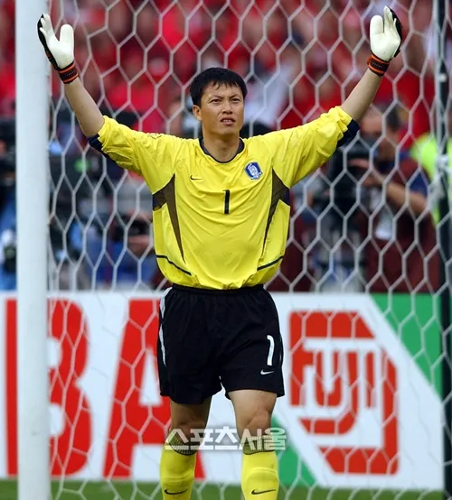
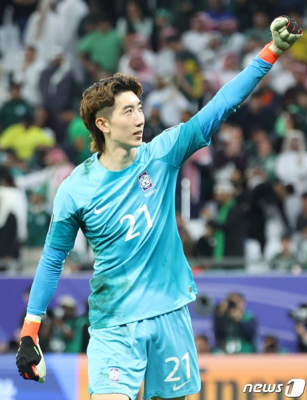
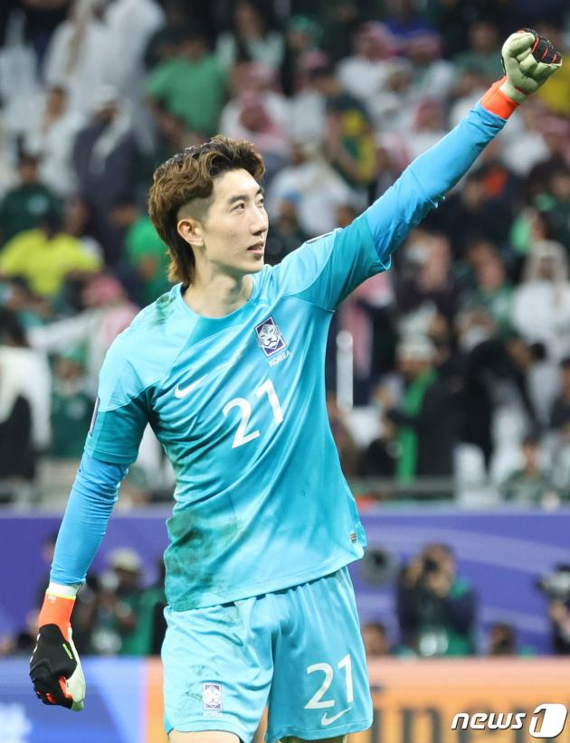
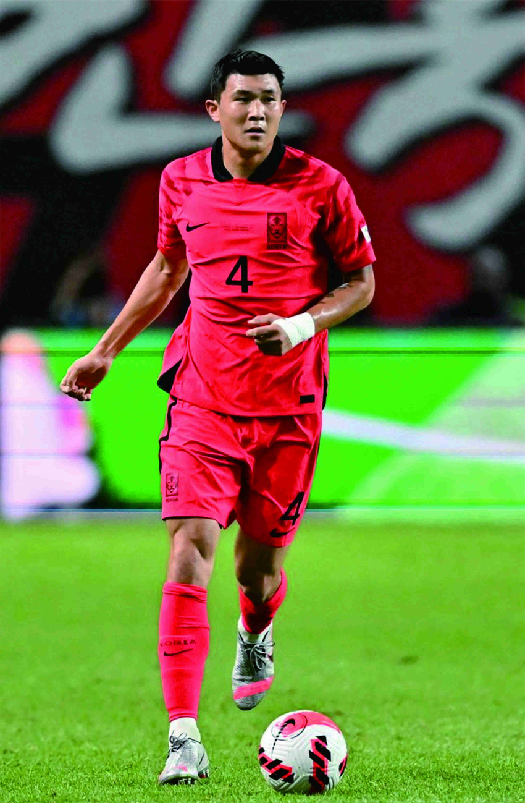
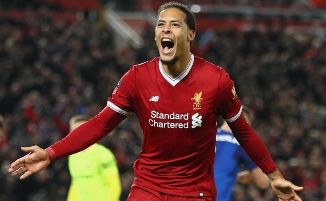
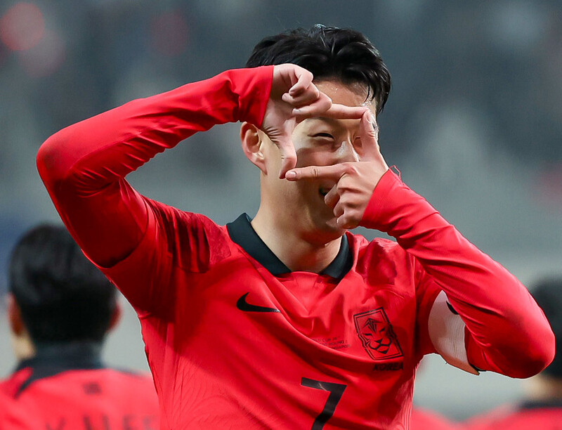
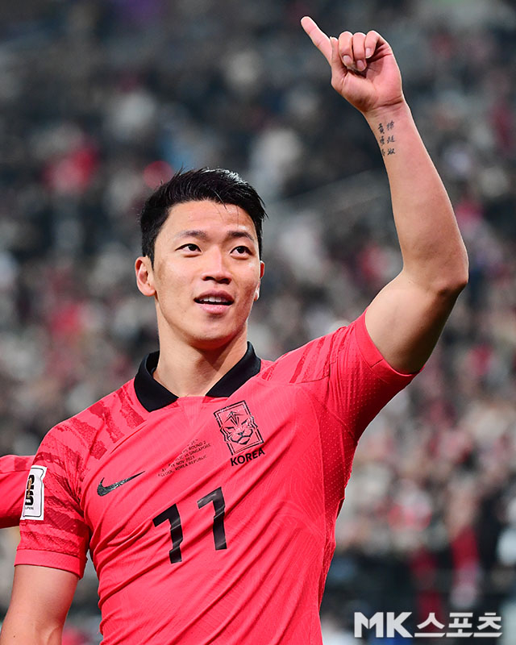
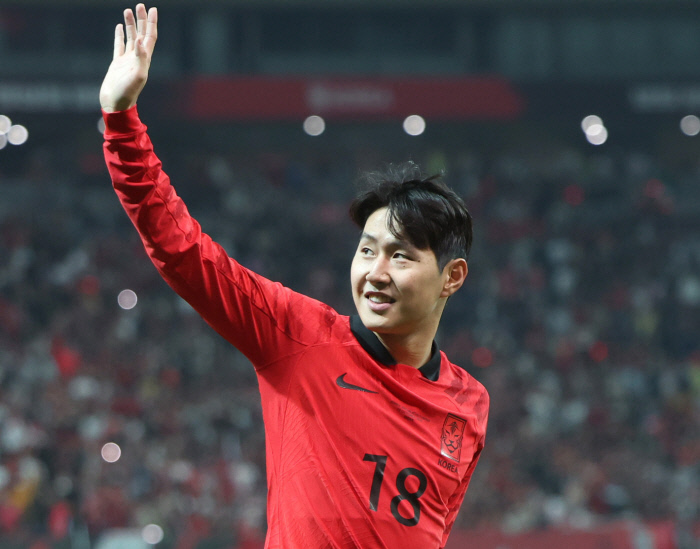
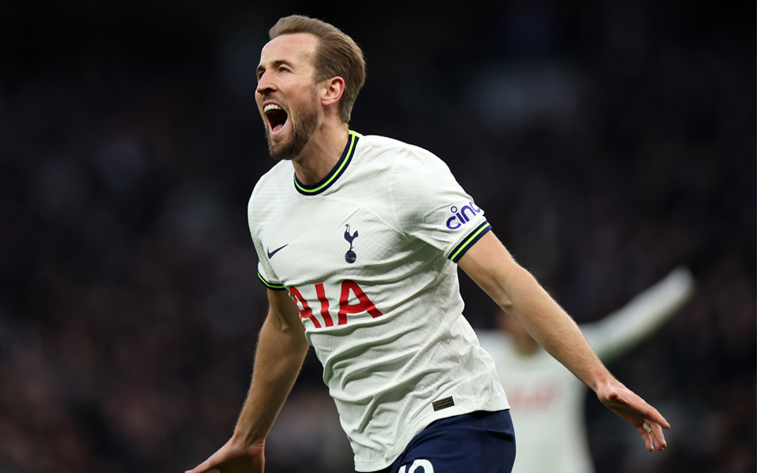

GK
골을 지키는 사람으로,
팀의 최후 방어선으로 골대 앞에서 상대 팀이 골을 넣지 못하게 막습니다.
갖추어야 할 필수 능력
빌드업, 공중볼 경합, 신장, 선방 능력 등이 있습니다.
대표적인 선수들

 

CB
중앙에 배치되는 수비수로,
주로 패널티 라인 앞에서 공과 공격수를 차단하고 팀을 조율합니다.
갖추어야 할 필수 능력
피지컬, 해딩경합, 스피트, 시야, 라인 컨트롤 능력 등이 있습니다.
대표적인 선수들
 

RB, RB
중앙에 배치되는 수비수로,
주로 패널티 라인 앞에서 공과 공격수를 차단하고 팀을 조율합니다.
갖추어야 할 필수 능력
스피드, 기동력, 크로스, 연계 능력, 1대1돌파와 수비 능력 등이 있습니다.
대표적인 선수들


MF
경기장의 가장 중앙라인에 있는 선수로,
격시에는 공격수들과 함께 압박에 나서야 하며, 수비시에는 적절한 위치 선정으로 수비수들을 도와야합니다.
갖추어야 할 필수 능력
스피드, 피지컬, 시야, 공간활용, 기동력, 슈팅, 연계 능력 등이 있습니다.
대표적인 선수들
  
FW
가장 전방에 있는 사람으로,
주로 공격에 가담하고 침투나 개인기 등을 활용해 상대 수비수를 제치며 골까지 만들어내는 선수입니다.
갖추어야 할 필수 능력
스피드, 파워, 피지컬, 슈팅, 크로스, 1대1돌파 능력 등이 있습니다.
대표적인 선수들
